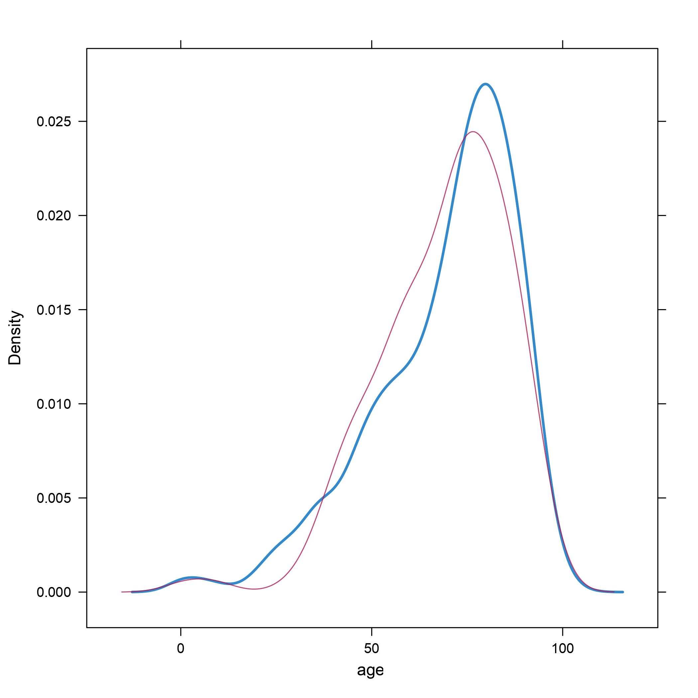

Imputation - the respectable face of p-hacking?
04 Jan 2022
What is imputation?
Imputation is ‘filling in’ missing values in a dataset. So, for example, say I have a dataset consisting of the name, sex, sex and height of some individuals as follows:
| Name | Sex | Age | Height |
|---|---|---|---|
| Alice | Female | 25 | 165cm |
| Bob | Male | _ | 180cm |
| Carol | _ | 55 | _ |
Notice however that some of the entries are blanks - their values are not recorded. There are many reasons why this might be the case - maybe the person who collected the data forgot to fill it in, or some information was accidentally deleted, etc.
Imputation consists of filling in the blank spaces, hopefully in a way that is sensible. The main reason to do this is that often when we train a model using data, we can only use rows in the data that are complete, i.e. no blank spaces. It can seem ‘wasteful’ to discard an entire row because it contains a missing value.
Another important reason we may wish to impute is because the values that are missing could be statistically distinct from the values that are not missing. For example, imagine that for whatever reason, younger people are less likely to have their age recorded in the data than older people. Then the missing values are statistically distinct from the non-missing values, and if we do some statistical analysis using this data we risk introducing bias.
This is all well and good as a motivation for imputation, but the waters can quickly get muddy.
How is imputation done?
There are a number of methods that are commonly used for imputation:
-
Mean substitution
Replace missing values with the mean of the non-missing values in that column. -
Modal substition
Replace missing values with the mode (most commonly occurring) of the non-mising values in that column. -
Regression
Train a model that predicts the missing values from the non-missing values. -
Imputation by chained equations
This one is a little more complicated, and is something like applying a regression model iteratively. I won’t go into it in detail here, but this answer on stack exchange gives a nice, simplified explanation of the procedure.
How much imputation is too much?
Let’s say that now instead of the above dataset, I have a larger dataset that has a lot of missing values. Let’s make it 1 million rows and 20 columns, and there is only one non-missing value in each row. Would it be reasonable to impute all of the missing values?
That idea understandably makes many people uneasy. Can we really be confident that our imputed values are sensible, especially since we started out with so little actual information? Surely this cannot always be ‘kosher’.
Taking the rationale behind imputation to its conclusion, we might even impute an arbitrary number of rows for which we have no data at all - effectively magicking new data into existence! If the non-missing values are indeed statistically distinct from the missing values in a way that can be ‘accounted for’ by the non-missing values, then it might be argued that not only is this ‘OK’, it’s thoroughly commendable statistical practice.
Imputation by chained equations - an example
Imputation by chained equations has emerged as a sort of ‘best practice’ for imputation in many areas of academia. Here is the result of imputing age in this way on a dummy dataset that I created:

Original values are in blue, imputed values in red. This graph shows the distribution of age, so values where the graph is at a peak are more common, and values where the graph dips are less common.
Your first reaction might be “Well there’s a pretty good match between observed values and imputed values. Seems sensible”. And that might be reasonable as a first reaction.
But then if you work with imputation for a little while and start thinking about it a little more, maybe you start to have some doubts.
Reasons for pause
Graphs of the type above, showing the distribution of observed and imputed values, are often used as a post-imputation diagnostic tool. We do the imputation, and then use those plots to decide whether the imputation is ‘acceptable’. But how do we tell the difference between ‘acceptable’ and ‘unacceptable’ imputations?
Well, things get a little vague here. My experience of the literature on imputation is that it is a bit cagey on this point. See, the problem is as follows: If the observed and imputed values are obviously statistically distinct, is that because the imputation is bad, or is it because the imputation is doing its job and correctly telling us that the missing values are indeed statistically distinct from the non-missing values?
How much do you trust the computer?
In practice, I don’t think statisticians place much trust in imputations that produce values that are clearly statistically distinct from non-missing values in the original dataset. They just don’t really think the computer is that smart, and I’m more or less in agreement. If they put their faith in their computer, they would also have the non-trivial problem of convincing a peer-reviewer why the odd looking imputation results are actually A-OK.
If the imputed values and the observed values are in conflict, then so much the worse for the imputed values, it seems.
What is the real purpose that imputation serves?
The algorithm behind imputation by chained equations is sometimes described as containing a pinch of magic. It has a remarkable tendency to produce graphs like the one above, with excellent agreement between the maginal distributions of the observed and imputed values, thus conveniently avoiding the above issues. This is despite the fact that one of the main justifications for imputation is that it is supposed to be used when the non-missing values are statistically distinct from the missing values, and to fill in the missing values appropriately. I have to think that this is not an accident.
Whenever I see humans behaving in ways that appear to contradict their stated principles, I am increasingly inclined to pay little attention to the rationalisations they offer, and instead look at what benefit they derive from the behaviour in question. In this case, the obvious useful purpose imputation by chained equations serves is allowing researchers to jack up their sample size, thus reducing their p-values, narrowing their confidence intervals and increasing their chances of getting a statistically significant, publishable result, without raising the hackles of the reviewers. Normally this sort of thing is called p-hacking.
What is p-hacking?
Researchers try to assess how confident they can be that their results are correct and not a ‘fluke’. The way this is typically done is by calculating a p-value, which is essentially the probability of seeing the result the researchers saw assuming their hypothesis is incorrect. We tend to take a low p-value as indicating a low probability that the hypothesis is incorrect. Low p-values are widely coveted by researchers the world over.
p-hacking is a suite of dubious techniques that researchers can use to artifically lower their p-values. While there is a clear personal incentive for them to do this (advancing their career, getting tenured etc), it has the unfortunate effect of causing the scientific literature to be populated with findings that are false. Then we have the embarrassment that is the replication crisis in medicine and the social sciences - a shamefully large fraction of results in the literature fail to be reproduced when someone else repeats the analysis.
The bottom line
If I simply took a real dataset and copy-pasted it to create an artifical dataset that was twice the size and with every entry duplicated, I would likely not get very far in publishing the results of any analysis. However, if I instead took a dataset where half the rows have missing values and do an imputation by chained equations, I doubt it would get much critical scrutiny, despite the fact that the end results are probably similar. I don’t think multiple imputations cut the mustard on this front either, given the remarkable tendency of imputation by chained equations to fill in values that look remarkably like the data that was fed in. Imputation by chained equations is complex enough that it is at least within the realm of possibility that it is doing something statistically sound, while not being obviously wrong. I find it hard to understand its primary purpose as anything except putting a respectable face on p-hacking.